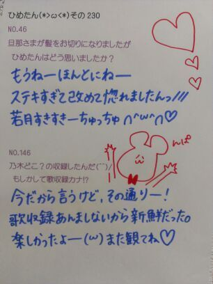

| 2013/01 31 Thu | ひめたん(*>ω<*)そ の258 |
質問いっぱいありがーとう∩^ω^∩
少しずつ答えていくので
楽しみにしててくださーい♪

.
さてこの前の乃木どこでは
1986年メドレーをしましたー
なんてったってアイドル
フレンズ
ダンシングヒーロー
CHACHACHA
DESIRE
ひめたんは
なんてったってアイドルを
歌いましたん♪
えっとー
曲決めるのって挙手制だったのねー
だから みなみ (星野みなみchan)とか
まなつ (秋元真夏chan)とかと
曲の好みが一緒なんだねーって
ゆってた∩^ω^∩♪るん
好きな曲多くて
盛大に高まったメドレーでしたっ
最近はねー
ばりっばりの5th製作期間なうです！
レッスンやら撮影やら
着々と進んでってるからねー♪
毎日メンバーの顔みるぞ(｀・ω・´)
みなさんには発売日を楽しみに
しててほしいなーと思いつつ
いやーそれが高校生としても
忙しい毎日を送っておりまして。
いろいろ上手くいかないなー
なんて思いながら
毎日を精一杯に過ごしておりますー
今日はちょっと遠くで
スチール撮影しましたん♪
楽しかったよー＼(^^)／
一周年ライブ楽しみよー＼(^^)／
るーん＼(^^)／
今はとなりで
いくちゃん (生田絵梨花chan)が
作詞作曲して歌っておりますー＼(^^)／
少しずつ答えていくので
楽しみにしててくださーい♪
.
さてこの前の乃木どこでは
1986年メドレーをしましたー
なんてったってアイドル
フレンズ
ダンシングヒーロー
CHACHACHA
DESIRE
ひめたんは
なんてったってアイドルを
歌いましたん♪
えっとー
曲決めるのって挙手制だったのねー
だから みなみ (星野みなみchan)とか
まなつ (秋元真夏chan)とかと
曲の好みが一緒なんだねーって
ゆってた∩^ω^∩♪るん
好きな曲多くて
盛大に高まったメドレーでしたっ
最近はねー
ばりっばりの5th製作期間なうです！
レッスンやら撮影やら
着々と進んでってるからねー♪
毎日メンバーの顔みるぞ(｀・ω・´)
みなさんには発売日を楽しみに
しててほしいなーと思いつつ
いやーそれが高校生としても
忙しい毎日を送っておりまして。
いろいろ上手くいかないなー
なんて思いながら
毎日を精一杯に過ごしておりますー
今日はちょっと遠くで
スチール撮影しましたん♪
楽しかったよー＼(^^)／
一周年ライブ楽しみよー＼(^^)／
るーん＼(^^)／
今はとなりで
いくちゃん (生田絵梨花chan)が
作詞作曲して歌っておりますー＼(^^)／

 1月22日、誕生日だったんです。
1月22日、誕生日だったんです。
もう過ぎちゃったんですが
お祝い...してくれたりしますか？
ごめんね過ぎちゃった(´;ω;`)
お誕生日おめでとうございます！
いくちゃんれなりんと一緒だねー♪
素敵な１年になりますようにっ
私明日高校受験！
受かったらおめでとうって言ってよーん(´∀｀)
どうなったー？
受かったかな受かったかな(´∀｀)
あたしの学校にも受験生さん来たよー
ひめたん進級できなかったら
おんなじ学年になるねー◎
受験受かったよ(^^)/
ひめたんにお祝いしてほしいな!?
おめでとう！お疲れ様でした♪
今のあいだにしっかり遊ぼうね←
高校生はねー楽しいと思うよー
いいこいいこー∩^ω^∩
これから受験なんだけど、落ちたら本気でやだから受かるよーに応援してー(^ ^)
そりゃもうーねっ
受かりますよ。
ひめたんが言うんだもん大丈夫。
受かってやるぜこのやろーって
思っていれば完璧よ＼(^^)／★
受験生応援お菓子もそろそろ
お店に出てるのかな？食べるしかー
妹が中学受験を一週間後に
控えてるんだけど、兄として
何かしてあげられることは無いかな？
ココアを作ってあげる( ^^ )
あと、受験の前日はしっかり寝たほうがいいよって伝えてくださいな。
いもたんふぁいとー！
受験まで１ヶ月を切りました！
でもなかなかやる気が出ないのでひめたんに喝を入れてもらいたいです(｀・ω・´)
あと応援メッセージお願いします！
喝！ぱしこーんっ
えっとー
ここまで来たら、あとは体調管理だね！
このタイミングで病気になったらほんとに悲しくなっちゃうからねー
いっぱい食べて、いっぱい寝て、
元気な状態で試験挑んでくだされ＼(^^)／
応援してるよーえいえいおー♪
一番好きな歌は？
えーどうしよう迷うなあ。
いつかランキングでも作ろうかなー
とりあえず今は ぱみゅぱみゅちゃんの
はーたーちーはたちーはたちーはたちー
が頭から離れんなー♪
乃木坂ライブで『48グループ』の曲を3曲歌う事になりました
ひめたんなら何を歌いたい？
「ずっと前から」
「初日」
「君のことが好きだから」＼(^^)／
ひめたんは合唱って好きですか？
合唱は好きなんだけどね、
声を張り上げてはパートを乱すことが
多々あります(´・ω・｀)
でも好きですよー♪

(＊´・ω・＊)ひめたん
コメント(202)
2013/01/31 17:06